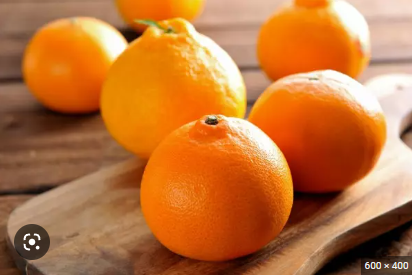

레드향
Home |
상품 소개 |
질문/답변

껍질에 붉은 빛이 돌아 레드향이라 불린다.
레드향은 한라봉과 귤을 교배한 것으로
알맹이가 굵고 통통해 식감이 좋으며
비다민 C와 비타민 P가 풍부해
혈액순환, 감기예방 등에 좋은 것으로 알려져 있다.
레드향 샐러드 레시피
재료 : 레드향 1개, 아보카도 1개, 토마토 1개, 샐러드 채소 30g
드레싱 : 올리브유 1큰술, 레몬즙 2큰술, 꿀 1큰술, 소금 약간
- 샐러드 채소를 씻고, 물기를 제거한 후 준비합니다.
- 레드향과 아보카도, 토마토를 먹기 좋은 크기로 썰어둡니다.
- 드레싱 재료를 믹서에 갈아줍니다.
- 볼에 샐러드 채소와 썰어 둔 레드향, 아보카도, 토마토를 넣고 드레싱을 부리면 끝!
지진으로 흔들리는 동안은 테이블(책상) 밑에 들어가 몸을 보호한다.(출처 : 국민안전처)